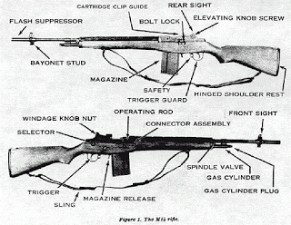

Vanderboegh: M14 - The Three Hundred Meter War
M14: The Three Hundred Meter War
A Chapter of 'Absolved'
by Mike Vanderboegh
Written to the tune of The Connaughtman's Rambles by the Irish Descendants
It
is said that God is always on the side of the big battalions. This is
not so. God is not on the side of the big battalions, but on the side of
the best shots. -- Voltaire, Notebooks
"One-Shot Paddy": 25 years before the Battle of Sipsey Street
In Ireland many years ago or so the legend says
Saint Patrick roamed the hills and glens to drive the snakes away,
But now we have another saint that’s bad news for the crown
His name is “One Shot Paddy” and it’s Brits that he will hound!
In
the Wild Irish Rose pub on Long Street in Columbus, Ohio, the band was
off tempo and the lead singer off key, but they mor e than made up in
enthusiasm what they lacked in musical skill. The pub crowd didn't mind.
The drunks howled along with the band, making electronic surveillance
impossible, so Sean McGrory didn't mind in the least.
The American opposite him at the table didn't mind either.
The Brits are getting worried they’ve all gone underground
If ‘One Shot Paddy’ sees them they know they’re going down
So the next time that you see the Brits with their faces full of fright
Look out for ‘One Shot Paddy’ and his friend called Eamon Wright!
"That wouldn't be you, they're singing about, would it?" the American asked, wondering for the tenth time why he was here.
"Yeah.
We're all One-Shot Paddy's these days, the one's who are still alive."
The accent was harsh, nasal and Belfast all over. The American didn't
know a heck of a lot about the Irish but he knew that. He took the
double jigger of Bushmills and dropped it into the pint. Then he grabbed
the mug and tossed some down. Beejeezus! No wonder the Irish kill each
other.
"So, you asked me here," said the American, "how can I help you?"
Through the hills of South Armagh this gallant hero roams
He’ll wander through the countryside he likes to call his home,
And when he finds a target he will quietly take his aim,
It is then that you will hear the crack and the Brits know who’s to blame!
McGrory
didn't hesitate. The American had been referred to him by a local
NORAID fundraiser, and vetted by people McGrory trusted. He'd spent
plenty of time on the ragged edge of gun running and usually could sniff
a set-up. This seemed straight-up, but . . .
The Brits are getting worried they’ve all gone underground
If ‘One Shot Paddy’ sees them they know they’re going down
So the next time that you see the Brits with their faces full of fright
Look out for ‘One Shot Paddy’ and his friend called Eamon Wright!
"I hear you have some items we might find useful."
"A
buddy of yours said you're looking for specific hardware. We met at the
Ohio Gun Collectors Association Show where I have a regular table. I
had a copy of Guerrilla Days in Ireland by Tom Barry I was reading and I
guess he keyed on that. We started talking Irish history and politics,
and the next thing I know, I get invited to a NORAID benefit."
So if you’re home at night and the newsflash it is red,
Your man from South Armagh’s at work – another soldier dead,
And when it comes to celebrate Saint Patrick’s day cheer,
Remember ‘One Shot Paddy’ and the gallant IRA!
The
American looked up at the band, then continued, "Of course, I was smart
enough not to go. I figure, hey, if you're needing what he hinted
you're needing, we don't want to do our meeting and greeting where the
FBI hangs out, right?"
The Brits are getting worried they’ve all gone underground
If ‘One Shot Paddy’ sees them they know they’re going down
So the next time that you see the Brits with their faces full of fright
Look out for ‘One Shot Paddy’ and his friend called Eamon Wright!
McGrory
smiled and nodded. "That's right, Yank. Too bloody well right. Ever
since George Harrison got pinched in '81, its been pretty tough to
transport armaments from the US. And with the seizure of the Marita Ann
last month, it's been tougher still. We still get arms from Libya, but
their Kalashnikovs are shite fer snipin'. We need something with more
range and power."
"Yeah," agreed the American, "I heard about the boat. How much did you lose?"
The band started another song, something ripped off of the Wolfe Tones. They did it as badly and as loudly as One-Shot Paddy.
"Seven
bloody TONS. Rifles, pistols, submachine guns, ammunition, explosives.
All of it collected in Boston. W e used Boston cops as guards, did ye
know? They were always loyal Irishmen before. The FBI put out that they
used some bloody great electronic eavesdroppin' on us, even claimed they
followed us by satellite, but it was really the old story."
"What's that?" the American half-shouted over the band.
"Paid
spies and informers. One of them's not goin' home to mother, I can tell
ye. But seven bloody TONS! What we coulda done with that lot." He
looked the American in the eyes and the Yank returned his challenging
gaze without a blink.
So what was that, the American wondered, a
warning not to double cross him? Like I needed it. I may not have ever
been across the Atlantic, but I'm not stupid enough to cross the
Provisional Irish Republican Army. Still, if he's worried about me
double-crossing him, maybe that means he's not going to double back on
me either. Maybe. There was a large part of the American that didn't
want to be here in the first place.
The Provo continued, "So
we're doing this next a bit different, is all." He didn't elaborate, but
it meant smaller loads, precise scheduling, moving through different
ports of exit and entry. He continued, "What we want are small packages
of arms suitable for sniping at distance, with telescopic sights, range
finders, binoculars, support equipment, ammunition all included, ready
to deliver to the boys at the front."
"I heard you're partial to Armalite 180s," observed the American, "or AR15s."
"Aye,
we were. Prefered the Armalites over the Colts. Nothin' beats that
foldin' stock fer slidin' it under a coat. But we need more range. The
Brits and the Ulsters mostly use SA80s now and they can cover us up with
fire. In order to get within the killin' range of an Armalite or a
Colt, we've gotta get within killin' range of them. We don't have the
ammunition stocks to match 'em round for round, nor the numbers. We've
got to shoot and scoot. One shot, one kill, home to mother by supper and
I'll see yer friends tomorrow. They own the battlefield out to 300
meters. What we want is something that out-ranges and out-penetrates the
5.56mm round. Something in 7.62 NATO or bigger. Something that can
punch through their bloody body armor or the sides of a Rover."
"I
thought Tom Barry said you didn't have to be a crack shot at seven
yards -- if you were close enough to grab them by the belt buckle,"
offered the American.
McGrory looked at the American sharply,
plainly angered. "Try it sometime Yank. Try it. Tom Barry didn't have to
deal with SA80s and body armor and Kevlar helmets. And he never sprang
an ambush where he didn't have local superiority in numbers. The problem
with grabbin' the Brits by the belt buckles is gettin' 'em to stand
still while you run up and do it. If fookin' Tom Barry had been in my
boots, he'd-a been dead by now. That's what I know about bloody
legendary Tom Barry."
The American nodded. "OK. OK. Our interests
coinci de, as they say. I know just what you need, and I can provide
it. Not in great numbers and only this once. I don't do it free either. I
can't say I believe in your cause all that much. You guys are still
socialists, right?"
"Yeah, so?"
"Nothing. I just gave all that up when somebody talked some sense into me."
"Yer
an American, you can afford to be a bloody capitalist. What I want
before economic justice is my country back from a foreign occupier.
You'd be a pretty poor Yank if you didn't believe in that."
"Oh, I don't say that the British have a right to be there, they don't. But the bombings . . ."
McGrory
cut him off. "I'm not a bomber. I'm a soldier. The only people I've
killed were the soldiers of a foreign power standing on my homeland. I'm
not wantin' to buy explosives from you, I'm wantin' yer bloody rifles.
And I'll pay. Rory told you that much."
The American nodded. "OK.
OK. Look, I'll do it for retail plus ten p ercent, and that's as close
to charity as I can get. You get a bargain from me now because I'm
getting out of the business. My wife's divorcing me and I need every
penny I can raise. So think of this as a fire sale. Unless you steal the
rifles, you'll never get a better deal. And don't expect another. I'm
done after this."
The Provisional IRA man nodded. It was a better
deal than he had hoped, even if the American had pissed him off with
his compromisable scruples. Sean had some questions though. "What type
of rifle?"
"M1A's in 7.62 NATO, the civilian version of the M14
battle rifle, five 20 round magazines each, with Leatherwood ART scopes
and mounts suitable for firing at Camp Perry matches."
The Irishman looked puzzled. Ah, thought the American. "That's Bisley matches to you. High power rifle competition."
Sean McGrory nodded his comprehension.
"Plus,
let me think," the American paused, "ah, 3200 rounds of M-118 special
ball match ammunition, in boxes not stripper clips. That's sixteen cans
at 200 rounds per can, four cans to a wire-bound wooden crate, plus
another crate of 800 rounds of AP. That's five crates total. I have five
rifles and that will give you 800 rounds per rifle. Ought to be plenty
to get them sighted in and operational. I'll throw in some repair parts
and springs , not a lot but enough. Cleaning kits. I don't have a stock
of binoculars or spotting scopes, but I can give you a list of makes and
models that will work best with the rifles. You can get them at
sporting goods stores anywhere in the States. Surely you've got some
locals who can pick them up without drawing suspicion?"
The Provo nodded. This was truly better than he had hoped.
"How much and when can I take delivery?"
The
American told h im. It was cheap at twice the price asked, and he could
get them headed to Mexico in three days. That gave him plenty of time
to check out a contact that had been given him in Texas. The Texan was
supposed to have Barrett M82 fifty caliber sniping rifles for sale. If
the new smuggling scheme held up, there would be a bumper crop of
One-Shot Paddys in South Armagh in three months or so. It was so good a
deal, that he decided to sweeten the pot.
"I'll give ye a thousand dollar bonus on the deal if ye can have them to me in 48 hours."
The
American grinned. "Sure, it'll just go the lawyers anyway. Every little
bit helps." He looked up to see the barmaid headed their way. "You got
the tip?"
"Sure as the mornin'."
"OK, I'm going to the
john and then out the back door. You've got my contact number. Call it
tomorrow and confirm the cash, and I'll get you a rendezvous, which then
will get you an escort to the pickup point. You come personally, with
only one other friend. Remember, I'm not going to screw with you so
don't you try to screw with me. I don't want to piss off the IRA, but I
won't be hijacked either. OK?"
Sean McGrory, which wasn't his
real name, grinned. "Up the Republic!" he toasted as he held up what was
left of his Guiness & Bushmills "Gelign ite cocktail."
"Hell, yes," agreed the American, "Up yours and up mine!" The Irishman laughed, and kept laughing.
I
guess he did get the double entendre, thought the American. And without
another word, he walked to the rear of the bar. When he hit the john
door, somebody was puking out his Irish whiskey -- probably a Jamesons'
drinker-- so he kept on going out the back, the thick-armed bouncer
nodding goodnight.
When he hit the street, he sucked in the
fresh, bitter cold air.20God, he wanted a cigarette. What a time to
quit. So he glanced about, and then did what he always did these days
when the urge came on him. He took a pen from his pocket and stuck it in
his mouth, gripping it in his teeth. A nicotine baby pacifier, he
snorted to himself. Then, seeing no one, he cut down the alley, stepped
over a drunk by the dumpster and made it to his car a block and a half
away. No one followed him.
Kraut Mueller started his beat up
Pontiac station wagon and pointed it toward his new home-away-from-home,
a roach infested apartment in the University district. His
soon-to-be-ex-wife, he knew, was asleep in the arms of her
newly-discovered "soul mate" in the place Kraut had paid for -- and was
likely to continue paying for -- for some time. He no longer cared about
that. He did care deeply about his six-year-old son who was sleeping in
the room next to theirs.
As he drove, he pondered the tactical lessons imparted by the Provo gun runner while he hummed "One-Shot Paddy."
The three hundred meter war.
Interesting.
"A decided ballistic advantage": Ten years later, on a ranch near Denton, Texas.
Kraut
Mueller looked over at the label to the right and slightly above his
head on the OD canvas wall. "Tent, General Purpose, Medium." Then he
scanned the men seated informally on folding chairs and cots scattered
about. Most wore BDU woodland camo, some were the same uniforms they had
worn on active duty. Kraut had never been in the military and he felt
decidedly at a a disadvantage. He wasn't a veteran. Yeah, he'd been shot
at. Peo ple had tried to kill him. But he had never been a soldier in
the service of his country as most of these men had been. His camouflage
was jeans and a plaid shirt.
No, he had not been a soldier. He
HAD been a traitor to his country during the same war that some of these
men were veterans of. He had been, he knew, a traitor to THEM, not that
he was going to brag about it here. He had been a communist and an
urban guerrilla in the making before Dr. Richter had saved him from that
insanity. And even after he had recovered from his "Benedict Arnold
period" as he called it, he had been a two bit gun runner for a while.
Battle rifles to the Provos, M-2 carbines to the marijuanos. Playing
with rearming hand grenades and selling them to Mexican pot growers as
booby-traps -- the transactions always made on THIS side of the border
in the desert outside Tucson where his cousin tended bar. It was good
money but stupid stuff, while his young son grew and his marriage had
eroded around him. But that was all many years B.C. now.
Before Clinton.
But
perhaps because he was unconventional in his experience, he could see
essential things that the others, steeped in the by-the-book of military
experience apparently did not. The question was, could he get it across
to them? Could he make a difference?
The truth was that the enormity
of the responsibility they had undertaken was beyond any of their
experiences. What they were grasping at without really knowing how, was
to recreate citizens' militias in their individual states in a fashion
that was practical, do-able on slim resources and yet would be
recognizable to the Founders, and most importantly, EFFECTIVE. What they
were about was fashioning a credible deterrent to the Clintonistas, and
in doing so they were trying to build a brick wall with little straw
and not much mud. They were trying, in fact, to rebuild the Founders'
concept of armed civic republicanism after more than a century of
disuse.
Hell, what we're talking about doing here in practical
terms is forcing the federal government to back down, to desist from
further depredations of life and liberty. And after Ruby Ridge and Waco,
everybody understood the costs of failure. They were undertaking, in
public, to . . . how was it that somebody had put it? . . . yeah, that's
it, to "shake their guns in the tyrant's face."
Well, when you
do that, you had better be a credible deterent. Because if you aren't,
the tyrant just stomps you dead and goes about his business. So what
constituted deterrence?
Numbers, yes.
Nobody knew what
they were exactly, but the press accounts made it pretty plain there
were hundreds of thousands of us, at least, maybe a million, maybe
millions. Let there be millions, Kraut silently prayed. What was it
Clausewitz had said? "In military affairs, quanitity has a quality all
its own." Well, we are no longer that fabled "nation of riflemen," but
we are a nation with riflemen. Count the deerhunters, William Jefferson
Clinton. Count them and tremble. Numbers we got. But numbers weren't
everything. Sometimes numbers weren't anything at all.
Deterrence
was also made credible by resources, logistics, by the capability of
the weapons wielded, and the ability to sustain them in the field --
ammo, fuel, even beans and rice.
Kraut was no soldier, nor even
an ex-soldier, but he was a student of military history, logistics and
weapons. And we're mighty thin on all of those. No air cover, no
artillery, no armor, no integral supporting heavy infantry weapons -- no
mortars, machine guns, hand grenades -- all those things that the
veterans had taken for grant ed when fighting as part of the greatest
army with the largest logistical tail and technological prowess of any
ever seen. All of which were forbidden to them as citizens by law or
else closely restricted.
When he had raised these concerns
earlier in the day someone had countered, "If we fight, we fight as
guerrillas and we won't need all those things. We'll live off the
weapons and supplies we sieze."
"You're presupposing," Kraut had shot back, "that we have the ability to seize anything."
There
were men and women who were attracted to the constitutional militia
movement who did worry about logistics, at least, but many were infected
with the survivalism bug. They had stocked up beans and bullets in
out-of-the-way places, worried as much about societal collapse as
government tyranny. But running and hiding at the first shot was not a
plan for victory, Kraut knew. He tried to tell such folks as he came
across, people who were making preparations but were too frightened to
train openly -- too afraid of exposing the existence of their carefully
hoarded caches to engage in the business end of civic republicanism --
that they would merely end up doling out their precious supplies to
those who did. Join, train, grow stronger by association and the power
and example of numbers, he had urged them. Then your logistical
preparations can be defended. Maybe, they won't even be necessary.
His
words, he knew, had fallen on mostly deaf ears. Some people, he had
found, not only took counsel of their fears, they hid BEHIND their
fears.
OK, so you worked with what you had. So what do we have? We have millions of rifles and we have will.
Will.
Will
-- which flowed from the combination of the natural anger at bad
governmental behavior and the fear that it could happen to all of us.
Outrage. Yes, we have that to burn. But that was a fickle thing, Kraut
knew. Evanescent. A candle burning brightly but subject to the guttering
puff of the first strong wind.
In the end, will was a by-product
not only of belief but of military ability -- of competence at the
business end of resistance -- and of that they had . . . not so much.
Almost none, in fact. Which was why these men were gathered here in this
tent, at one of the first national meetings of militia leaders in the
country. These were not, for the most part, the posturers and the speech
makers, the "militia generals" and conspiracy loons. Those were at=2
0the meeting aplenty, to be sure. But they were, at the moment, outside
this guarded tent in the middle of the encampment, speechifying and
comparing Trilateralist and Bilderberger notes in heated conversations,
selling videotapes and Spotlight subscriptions to one another.
These
men, on the other hand, were the unit builders, the trainers, here to
hash out the doctrine, strategy and tactics of armed civic republicanism
in the last decade of the bloody 20th century, at a time when 99
percent of their fellow citizens could not have told you what that
phrase meant. These were the serious men, the practical men, and for
every one of them, there were a hundred likeminded leaders scattered
across the country who would pay attention to what was said here. Folks
who would read what was posted on the Internet about it, sift it
according to their own experience, judge it, discuss it with their
people and internalize what made sense in their own field training
exercises and practice.
"'Well regulated' mea ns standardized,"
one of the men from Michigan was saying. "We all ought to adopt a common
rifle and caliber." He was immediately interrupted from three sides.
"According to whose standard?"
"All my guys are poor volunteers, some of them don't even have deer rifles, just shotguns."
"No, he's right, we ought to standardize on ARs and 5.56 like the military."
"Just about every guy I've got has a different weapon. How do I make them upgrade?"
"Yeah?"
challenged someone else, "Who's going to buy them? Uncle Sugar ain't
going to reimburse you the thousand dollars it takes to find an AR these
days. And he's not going to buy your ammo either."
"All right," said the Wolverine, "then make it SKS's, AK's and the common caliber of 7.62x39. Everybody can afford an SKS."
Half
of the men groaned or rolled their eyes. Separate arguments broke out
over the eternal gunnie question of 5.56mm versus 7.62x39. AR's were
more accurate, AK's were more reliable. What did you want? It was like
the old beer commercial. Great taste or less filling? And then there was
the corollary dispute, .45 vs. 9mm. And, as if to suggest they didn't
have enough to argue about, somebody else brought that up at that moment
too. There were many passionate opinions and no compromise was
possible. Noise filled the tent.
"GUYS!" a big booming voice cut
through the chatter. They all turned toward the big bald headed guy from
New Mexico. "We're here to hammer out a common plan. Arguing about
caliber is a waste of time because we'll never agree. Let's get back to
what we CAN agree on. And you," pointing at the guy who had brought up
the merits of .45 vs. 9mm, "I can answer that question."
Squirming at the attention of every man in the tent, the guy from Kansas said, "Uh, OK, how?"
The big New Mexican grinned. "Because I've been shot with both and .45 hurts worse."
The tent exploded in laughter.
"That's right!"
"You tell him, Bob!"
Kraut
Mueller liked the New Mexican. He had a command presence, a head on his
shoulders and little tolerance for horseshit and wishful thinking.
It
was decided that standardization, while desirable as a goal, would be
left up to individual units to implement, or not, given their own
resources. Of course, that was the way it was with just about everything
they discussed. Militiafolk were by nature irascible, independent and
opinionated. Trying to get them to move in a common direction was like
trying to herd cats and chickens at the same time. It could be done, but
the least you would get for your trouble was exhaustion and a migraine.
Kraut knew what he'd pick, if asked. When he spoke later with Bob and some of his guys, he told them.
"George
S. Patton said the M1 Rifle was the best battle implement ever devised,
but that was only because he died before they refined it into the M14.
It is absolutely reliable, it is accurate with iron sights and it is
hard-hitting. Most importantly, it outranges the standard weapons of our
likely antagonists, the federal police agencies. What are they armed
with? ARs and MP5 submachineguns. The 5.56mm slightly outranges the
7.62x39 in practical terms, so with an SKS or an AK you've got to get
well inside his fire envelope before your fire begins to tell on him."
Kraut paused. He still had their attention, although a couple of foreheads were starting to wrinkle up in argument.
"I
met a guy one time who clued me in about trying to fight a superior
force with weapons that had the same practical ranges as your enemies.
He was a Provo IRA man over here on an arms buying mission and bought
M1A's from me. He was real happy to get them. Why? Because the 7.62 NATO
outranges the 5.56 by a considerable distance and hits harder when it
gets there at any range. And yeah, I know, long range target shooters
are getting great results with heavy 5.56 bullets at long ranges, but
they're only punching paper, not a man in helmet and body armor firing
back at you." Kraut paused again. He could see the words of objection
forming. Before they could speak, he continued.
"Sean taught me
about two things. The Gelignite Cocktail, which is a double of Bushmills
dropped into a pint of Guinness Stout Ale," a couple of the militiamen
laughed at that, "and the Three Hundred Meter War. If this comes to
shooting, God forbid, it's those three hundred meters you've got to
worry about. Nothing is more demoralizing than being harried and
bloodied by an enemy you cannot touch. Somebody who shoots and scoots
and is gone when you get to where he was. Now that doesn't mean you're
not going to close with the enemy. You must. After you driven him to
distraction and got him jumpy and going in ten directions at once then
concentrate and STRIKE. But even then, what is the harm in carrying the
fight to the enemy with a weapon that punches harder than his at any
range? A weapon that will penetrate cover better than his. A weapon that
is more reliable than his."
"But the AK . . ." one of the men blurted out.
"Yeah,
I know the Kalashnikov is even more reliable than the M14. And it's
cheaper, and ammo's cheaper and it's what most of us have got. That or
an SKS. I own both. So do most of my guys back in Alabama. But we're
still just getting together now, trying to get our heads around a
problem that only reared its ugly head two years ago at Waco. And I'll
concede the point that a man who knows20how to go prone and shoot a $69
SKS with iron sights at practical combat ranges is a greater asset to
his unit than somebody with a $2,000 scope-sighted trophy who can't the
broad side of a barn without a table and bench, doping the wind and a
significant amount of prayer."
"Look," said Kraut, "have any of you read John Plaster's The Ultimate Sniper that came out a couple of years ago?"
"Sure," said a tall sandy-haired fellow from West Texas.
"OK, maybe you'll remember this. I carry it around in my wallet because I'm always having this argument."
As
he spoke, Mueller reached around, produced his wallet, slipped a much
folded piece o f paper out of it and put his wallet back in his jeans'
pocket. He began to read.
"A term cited repeatedly in this book
is 'ballistic advantage,' the great benefit you have over potential
opponents due to your .308's performance. I coined this term so snipers
could clearly understand that at ranges beyond 400 yards, their rifles
are inherently more accurate, more powerful, and more lethal than the
assault rifles carried by their adversaries. At shorter ranges, an
assault rifle's large magazine capacity and high rate of fire give an
opponent the advantage. Therefore, think of yourself like a long-armed
boxer who keeps his foes at arm's length, where you can pound him and
exploit this great advantage. Equally, realize that allowing your foe to
come within close range brings mortal danger. Since this is an
advantage inherent with the ballistics of these respective rounds, let's
examine those relationships exactly. Our first data box compares .308
Federal Match bullet energy against the energy of Soviet Type PS 7.62mm
123 grain and 5.45mm 53-grain rounds fired from an AKM assault rifle . .
. From the muzzle, the .308 has approximately two times the energy of
its competi tors -- meaning it will strike with twice the force,
penetrate media to about twice the depth, and so on. But as we go
farther out, the advantage of the .308's heavier boat-tail bullet
actually becomes even greater. By the time you're at 600 yards, it's
hitting with about four times the force. To keep this in perspective,
realize that the AKM rounds generate much less energy at 600 yards than a
mere 9mm does at the muzzle, which is about 350 foot pounds . . . Next
consider the drift advantage you have when it comes to a 10 MPH
crosswind, shown in the next box. Again, the advantage is immediate but
becomes more profound with distance. . ."
Kraut paused to clear
his scratchy throat. One of the New Mexicans handed him a canteen and he
up-ended it with a big swig, only to find it was full of Jameson's
Irish Whiskey. He gagged, and whiskey came out his nose and ran down his
chin. Choking and sputtering, he gasped "Water!" and another canteen
was handed him. This delighted Bob's boys, who leaped up to slam him on
the back (which only made things worse) and to call out insults like,
"What's the matter, Alabama, never had Irish whisky before?"
"I .
. I told you," he wheezed, "I'm a Bushmills man." Then he coughed
again. "I never drink any alleged whiskey that comes out of a round
bottle."
For the uninitiated, Bushmills' Irish Whiskey, the nectar of the pagan gods of the Celts, comes in a square bottle.
Looking around through tearing eyes, he realized it had been a set-up. "You dirty bastards . . ."
"No, no," they demurred, denying culpability, laughing while trying to appear penitent at the same time. "Go on. Go on."
He looked at the folded xerox and his eyes still teared, unable to focus. Finally, he was able to. Where was I? Oh, yeah.
Again,
the advantage is immediate but becomes more profound with distance. . .
By the time the AKM 7.62 round has traveled 400 yards, it has blown
fully two body lengths off target. Imagine your foe 'guesstimating' when
firing 500 or more yards into the wind or shooting against a stiffer
crosswind. A round's bullet path tracks its descent from the instant it
exits a=2 0muzzle aimed parallel to the earth and indicates the amount a
shooter must hold high when firing at longer distances. Here the
advantage over a 7.62x39mm is obvious, but the higher velocity 5.45x39mm
maintains a trajectory comparable to the .308 Match round."
Kraut paused again, taking another drink of water and verifying it before swallowing.
"Our
final comparison is velocity, and here the long-distance .308 advantage
clearly shows, despite the initial superiority of the 5.45x39 bullet.
Because the heavier better maintains momentum, it overtakes the 5.45
bullet at 400 yards and by 600 yards it's decisively superior to either
AKM. Now let's combine these ballistic effects. The .308 Match bullet
strikes with considerably more energy, an advantage that increases with
distance; it shoots truer and straighter in a crosswind; it is=2 0much
flatter shooting than the 7.62x39, and approximately similar to the
5.45x39mm; and the .308 considerably exceeds these rounds' velocity
beyond 400 yards. Overall this is a decided ballistic advantage."
Kraut
looked up from the paper and handed it the man on his right. "Look at
the charts," he said, "Plaster's not wrong. And the 5.56 isn't much
better than the Kalashnikov rounds."
"Hell," said one, "everybody wants to be a goddam sniper just so they can get out of training. It's a damn disease."
Kraut
looked over at the man, and nodded. "I know what you're saying. I've
seen it too. But I'm not talking about making more snipers, I'm talking
about making more capable riflemen. I know we can't get there today or
even tomorrow. What I'm talking about is the future. We need to recreate
Dan Morgan's body of riflemen, with aimed, disciplined semi-automatic
fire. Rifles carried by trained, physically fit men who know what to do.
Unless I miss my bet, the threat of that is what keeps our opposite
numbers in the bowels of the Hoover Building pacing the floor at night.
And the M14 series semi-auto is the best tool that is available to us."
"Plus," Kraut added with a smile, "its a marvelous platform for launching rifle grenades."
"Rifle grenades?!?" blurted one of the men. "Who's got rifle grenades?"
"I do," replied Kraut calmly. And before anybody could object, he continued.
"Of
course, they're inert training grenades. All perfectly legal, but great
to train with. And if there ever should need to be real grenades, don't
you think that in a nation of machine shops with a chemical industry
second to none that we couldn't accomplish THAT? The important thing is
to get your practice time in before if, as and when. Try hitting a
55-gallon barrel with a pound and a half projectile at 300 meters
sometime. It's kick-ass fun."
"Tell us more about the rifle
grenades," said one. Kraut grinned inwardly. Well, whatever worked. And
if the guy you were trying to sell the serviceable used car to was more
interested in the chrome, well, wasn't it the best chrome you had ever
seen?
"OK," agreed Kraut amiably. "The launching of rifle
grenades from an M14 series rifle requires a special grenade blank
cartridge, a USGI flash suppressor with bayonet lug and an M76 grenade
launching attachment . . ."
The Quarry: Six months after The Battle of Sipsey Street
The
first group of Alabama State Defense Force trainees sat on rude wooden
benches in the open, arranged in an arc in front of a small raised
platform, following the natural contour lines of the punchbowl that was
this end of the quarry's principal feature. With the olive drab canopy
over it, it looked like nothing so much as a GI roadside fruit stand.
The ex-gunnery sergeant of Marines waited while the acting sergeants
hushed their squads. Behind him was a free standing bulletin board with a
large graphic training aid showing the major assemblies and exploded
view of a military rifle.
"All right. My name is Sergeant Major
Hafnir. I am the lead marksmanship instructor here. And this," he said,
gesturing to the training aid illustration, "is why you're here."
"The
U.S. Rifle 7.62 mm M14 is a rotating bolt, gas operated, air cooled,
magazine fed, shoulder fired weapon. It is 44.14" long and weighs 8.7
pounds. With a loaded20magazine and sling it weighs 11.0 pounds. It's
maximum effective range without accurizing and using iron sights is 460
meters. That's 500 yards to you apes from Winston County. Adopted in
1957, 1,380,358 M14 rifles were made from 1958 to 1965 by the U. S. Army
Springfield Armory, Winchester, Harrington & Richardson Arms Co.
and Thompson-Ramo-Wooldridge, known fondly forever after to riflemen of
all generations as TRW. Thanks to that incompetent swine Robert
McNamara, the M14 was replaced as the standard arm of the U. S. Armed
Forces by the Poodle Shooter, the Matty Mattel Toy, the ever-jamming,
cursed M16, in the mid-1960s. After that, the U. S. Government sold the
M14 rifle production machinery to Taiwan and they began making Type 57
rifles in 1969.
Today, there are fewer than 150,000 M14 rifles in
the U. S. military inventory, with many of those packed in cosmoline at
Anniston Army Depot here in Alabama. At least 450,000 M14s have been
transferred to the foreign governments of Israel, Estonia, Latvia, and
Lithuania. Israel was given 35,000 M14 rifles by the U. S. Government in
1973 at the start of the Yom Kippur War. The Israelis built 10,000
sniper rifles out of these and they remained in service until 1997. Some
of these have since returned to the United States for civilian sale.
During the Clinton Administration. . ."
There were some boos and jeers from the crowd. Hafnir stopped. His face wore a killing look. The punchbowl got deathly silent.
"I'm
going to say this just once. The next GODDAM snot-nosed DUMBASS that
interrupts this lecture is going to be carrying one of these rifles over
his head on a ten mile dead run around the camp until he pukes his
asshole up for inspection. DO YOU UNDERSTAND ME?!?"
"Yes, Sergeant!"
"WHAT?"
"YES, SERGEANT!"
"All
right. During the Clinton Administration, three quarters of a million
M14s were ground up by Presidential Executive Order, destroyed at
Anniston for no other reason that I've ever heard except that they made
the cowardly SOB nervous."
Nobody snickered.
"However, the
M14 rifle remained in use aboard U. S. Navy ships and in Navy SEAL
Teams as well as with US Army Delta Forces. You may remember that Randy
Shugart, who won a Congressional Medal of Honor for his conduct in
Mogadishu in October 1991 carried an accurized M14. With the advent of
the wars in Iraq and Afghanistan, the M14 was brought back as a
Designated Marksman weapon and has given great service, with its added
range and hitting power a definite plus. Even so, some problems were
experienced with Checkmate production mags and there was also the
difficulty of finding serviceable receivers among the few M14s that
Slick Willy had left us in the inventory."
The morning breeze whipped a fine grit into the eyes of the assembled trainees. The tarp over the platform flapped slightly.
"As
produced, the M14 was capable of both semi-automatic and full automatic
fire, with a selector lock that only the unit armorer could free up by
means of a special tool. There was a later attempt to make a BAR out of
the M14 and the M14E2 was given a straight line stock, pistol grip,
forward hand grip and bipod. However, because it lacked the BAR's weight
it was not as stable and effective as an automatic rifle, although it
did have firepower. Does anyone here know what the classic definition of
firepower is, as applied to infantry rifles?"
"More misses per minute, Sergeant!"
"Right. Heard me before, have you?"
"Yes, Sergeant!"
"Anyway,
what the M14 excels at, what it does superbly in the hands of a
rifleman trained to its use, is aimed semi-automatic fire. N ow some of
you have the notion that you're going to be big, bad snipers. Most of
you have as much chance of becoming a sniper as you do of getting laid
in the middle of Governor Marsh's Sunday School class at First Baptist."
One
kid from St. Clair County -- and only one -- laughed out loud at that
and blurted "God damn!". Hafnir didn't say a word, but you could hear
his eyeballs click as he looked at Staff Sergeant Bowles who was
standing on the sidelines closest to the poor unfortunate. In an instant
Bowles was in front of the trembling kid.
"Name?" Bowles said it softly, but with a deadly import. It would have been more humane to have screamed at him.
"C-c-cartwright, Sergeant." The boy badly wanted to piss his pants.
"Rise
and come to parade rest when I talk to you." There was something
disembodied about Bowles' voice, like the sibbilant computer-generated
hiss of a mechanical snake.
Cartwright leaped to his feet, rigid. At attention.
"I said, at 'parade rest.' I'm an NCO not an officer. Are you hard of hearing, Cartwright?"
"N-no, Sergeant."
"Then you heard what the Sergeant Major said?"
How somebody could sound so reasonable and yet so frightening all at the same time was a mystery to the trainees who heard him.
"Yes, Sergeant," said the miserable Cartwright.
"Follow me."
"Yes, Sergeant."
Bowles marched off with the condemned man in tow and was soon lost to view. No one dared to turned to watch him g o.
Hafnir cleared his throat.
"Right.
Don't get me wrong, snipers have their place on the modern battlefield.
But that place is in support of RIFLEMEN, executing the integrated
battle plan of the unit commander. They are not freebooting pirates
wandering around the battlefield plundering souls at their own whim.
THEY support YOU, the rifleman. And that is what we are going to do in
the next week. We are going to make riflemen of you. You will be taught
how to use the rifle in defense of yourself, your unit, your family and
your state. You will be taught marksmanship and maintenance. You will be
taught the use of the bayonet and of the rifle grenade. I will teach
you, and not God nor Ray Marsh will help you if you fail. Understood?"
"YES, SERGEANT!"
"We'll see."
Hafnir
turned to the table beside him and picked up a rifle, racking the bolt
back, where it locked in place with a clack on the empty magazine. He
faced front and hefted it at port arms.
"All right, this is the
Taiwanese Type 57 Rifle, an almost exact clone of the US M14 Rifle.
Through a magical process which your brains are far too primitive to
comprehend, the State of Alabama has acquired a number of these for the
maintenance of public order during the present emergency. This little
darling and all her sisters come to us straight from the Combined
Services Arsenal at Kaohsuing. When you successfully complete your
training here, each of you will carry one home with you, along with a
new M1956-style H-harness and belt, three magazine pouches, a canteen,
cup and cover, a bayonet and scabbard, seven 20 round magazines and a
basic load of M80 ball ammunition. If, at the end of the week, you are
selected as a Designated Marksman, you will return for another training
rotation and will then be issued M118 Special Ball ammunition instead of
M80.
Per state law, as interpreted by the Attorney General and
supplemented by certain executive orders of Governor Marsh, the Alabama
State Defense Force has been remodeled along the lines of the Swiss
system."
Those watching marveled that the rifle moved not a millimeter while Hafnir spoke.
"You
will note that the rifle issued you has been restamped at the new ASDF
arsenal at Montgomery with 'M14SA' and 'Alabama'. The first was done to
reduce confusion among us old timers who have never called this
beautiful rifle anything but an M14. The 'SA' stands for semi-automatic
as all of these rifles have been so modified.
The second was done
to remind you that this rifle is the property of the State of Alabama.
It is not yours. It is not to be used for ANY PRIVATE PURPOSE
WHATSOEVER. It will stay in your gunsafe or closet until it, and you,
are called out by the state, for further training or active service. You
will be responsible for this rifle, and woe betide you if you lose it.
You will wish you had never been born, and at the very least I can
assure you that whatever your ultimate fate, you will do that wishing in
jail. Understood?"
"YES, SERGEANT!"
"Those of you who are
familiar with the M14/M1A series of rifles will no doubt also note
there are two significant changes to these rifles which were made at the
arsenal. These are a Sadlak tactical magazine release latch, here," he
pointed, "and a Smith Enterprises extended bolt stop/release, here." He
turned the rifle about to point at a piece on the left of the receiver.
"Taken together, this modification saves seconds on magazine changes.
And20seconds count in combat. Believe me."
Hafnir returned the rifle to the table.
"A
few words about the bayonet and the rifle grenade launcher. Every
generation since the invention of gunpowder has thought that the bayonet
-- the infantryman's spear of last resort -- would become as obsolete
as Achilles' shield. It never has. Do you know why? Because the rifleman
is forever being called upon to 'restore order.' Sometimes that means
just showing our serious intentions without shooting some poor asshole
as an example to the rest. Fixing bayonets allows us to announce our
intentions. It also allows us to keep disarmed prisoners moving to the
rear, or crowds of civilians in line at a disaster recovery center.
Because merely showing it is not always enough to prevent its use, you
will be taught how to use it in combat. The M14 is an excellent bayonet
platform, unlike Mr. McNamara's Mouse Gun which can break in a heartbeat
if you buttstroke someone with it.
Now, because we don't want
you to have to get that close, we also teach you the art of the grenade
launcher. And it is an art. Among other things, we teach you the
grenade launcher because it may be necessary to project tear gas
grenades for crowd control."
If anybody had any questions about "among other things," they weren't going to risk Cartwright's fate to find out.
"After
training, one in four of you -- those who demonstrate aptitude -- will
be chosen as designated grenadiers and you will be issued an M76 type
grenade launching attachment along with your rifle. You will also be
responsible for thi s piece of issue equipment. Grenade blanks and any
pyrotechnic grenades or other munitions will be issued to you at times
of unit muster, if required. In the meantime you keep that attachment
with the rifle at all times. Understood?"
"YES, SERGEANT!"
"All
right, I guess we'll find out whether Alabama still grows sons capable
of being riflemen. Acting sergeants, form your training squads by number
and line up to draw equipment. After the equipment is received, you
will sign for it. You in-bred rednecks from Walker County can make an
'X' if you need to. You will then form up and your acting sergeants will
inspect you and insure that each of his men has everything and it is in
working order. After that, you will report back here to the seats you
now occupy for the next bloc of instruction."
Hafnir's eyes scanned the crowd.
"MOVE!"
"YES, SERGEANT!"
As
they stood and turned to form up, in the distance Cartwright's form
could be barely seen, already faltering, as Bowles jogged easily beside
him. No one wanted to join them, so no one said a word.
Voltaire and God's will: After Sundown, Instructor Barracks, The Quarry.
"Hey, Schultz," called former Gunnery Sergeant Hafnir, "bring me another beer while you're over there."
"On
the way," replied Sergeant 'Schultz,' whose real name was Schwartz.
Hafnir had been calling him 'Sergeant Schultz' for more than seven years
now, but Schwartz didn't mind. Everybody had to have a nickname and
there were worse ones than being called a character from an old sitcom.
The instructor cadre was gathered around a table in the common area, boots up, winding down after a good first day.
"Did
you think we'd ever be drilling newbies again in the fine art of the
M14 rifle?" Bowles asked, addressed to no one in particular. There were
murmured grunts and agreeable nods. They all wore a half-smile on their
faces. God, they had missed this. The camaraderie, the sense of purpose,
the mission.
Winkler replied, to God as much as Bowles, "I just hope I don't lose my federal pension over this."
Hafnir
countered, a little more roughly than he actually felt for the sake of
the others, "What're you worried about? At least you got a good-lookin'
young wife who can earn her livin' on her back. Look at poor Bowles
there. His wife left him years ago and he couldn't get Barney Frank to
pay him for a blowjob."
They all broke out in laughter, even
Bowles. Even Winkler. He'd only known Hafnir for four years and the
older Gunny had been ragging him for three=2 0and a half of those about
Marie. Winkler was lucky and he knew it, so he didn't mind. Hafnir's
wife had died of cancer the year before and there had been a time when
his friends had feared that one morning they'd wake to the news that the
ex-Marine had eaten his .45. Not now, though. Now Hafnir, like them,
once again had a purpose in life.
Then Hafnir asked, "How's Cartwright, Bowles?"
"He'll
be all right. I didn't grind him too bad." (That meant that he was
sleeping in his own cot tonight and not in the infirmary.)
"That
boy musta had three breakfasts and a midnight snack. He may be stupid
and out of shape, but he's got grit. Kept tryin' to keep goin'."
"Hell," Winkler offered, "they're all stupid and out of shape."
"Naw,
they're not," piped up Jemison. Unlike most of the other trainers, who
had been scout-snipers or marksmanship instructors for the Corps,
Jemison was all Army and had been a Designated Marksman in Iraq and
Afghanistan with the 82nd Airborne Division. At the moment, he was sunk
so deep in the shadows of a beat up recliner in the corner that you
could barely see him from the table. Like a sniper in his hide.
"Pay
attention to a little kid named Flynn. He's a natural, and he's got a
common-sense mind that's as quick as a snake. He's attentive, he's
patient and he's a tough little monkey. On the evenin' run I'm settin'
the pace and they're all draggin', but Flynn's just matchin' me stride
for stride and my legs have got to be six inches longer than his. So, I
look over at him and he gives me this grin and a wink. And I just busted
out laughin'. Couldn't help myself."
"Maybe he wanted a date, Jemison," said Bowles with a leer in his voice.
"Mebbe,"
said Jemison agreeably, "but he was the first man in his class to
successfully field strip and reassemble his rifle. I walked over to him
and accused him of doing that before, expecting that he had an M1A or a
Polytech M14S at home. The boy got insulted, I could tell. He says, 'No,
Sergeant, I just paid attention to what you showed us.' He did too.
When I was demonstrating the technique he just sat stock still, taking
it all in. Turns out the only military style weapon he's ever owned is a
Rumanian AK74."
"An idiot savant," sneered Bowles, adding, "Forrest Gump lives."
"No,
I noticed that kid too," said Winkler. "I was going over sight picture,
ballistics and the incremental sight setting adjustments between M80
Ball and M118 Special Ball, and he held up his hand and said, 'Sergeant,
if the M80's bullet is lighter and travels faster, won't it hit higher
on a target than an M118?' Worked that out by himself just looking at
the ballistic tables on the wall. I asked him if he'd ever reloaded or
done any match shooting and he told me no, but that he liked the peep
sight of the M14 over his AK74 because it was easier to adjust and had a
longer sight radius so that meant it would be more accurate."
"So he reads Guns and Ammo AND Shotgun News." Bowles was still skeptical, but then skepticism was his default mode.
"Bowles," said Jemison, "you're one deeply flawed human being."
Bowles lifted his beer bottle in a mocking toast. "I'll drink to that."
The TA312 field telephone on the wall clacked. Hafnir reached a long arm over and snagged the handset out of the cradle.
"Instructor Quarters, Hafnir."
He listened for a moment.
"Right. Send them down."
He replaced the handset.
"Company coming. Jack Durer and one friend."
"Shall we clear the decks, Gunny?" asked Bowles, thinking of the beer bottles.
"Naw, it's just Jack. He probably wants to find out how we did today. Relax."
They
hadn't seen Durer since the day in the Governor's office in Montgomery
when the state's chief executive had hired them for the job of training a
modernized ASDF.
Hafnir paused, then added, "And Bowles?"
"Yeah, Gunny?"
"Don't try that snake-scary voice on Jack Durer. He'll feed you your larynx."
As
they walked down the path leading to the Instructor Quarters with the
bare illumination of the smuggler's moon guiding their steps, Jack
Durer's friend looked up at the night sky. It was beautiful here, deep
in the Alabama piney woods, with barely a light in the camp apart from
the main gate at this time of night. Lights out for trainees in the
Alabama State Defense Force meant lights out as it did in any other
army, and even if it wasn't as yet much of an army -- or really, even an
army at all -- the stars still blazed forth in all their glory.
Jack Durer caught his friend's upward glances. "Pretty, is it not?" he asked in Mandarin.
The
friend sighed, and spoke slowly, carefully, in barely accented English,
"Yes, but not so beautiful as the stars of a home I shall never see
again."
"They're the same stars, my friend. Besides, you'll go back one day."
"No,
I think not. The world as we knew it is falling apart, Jack. It is as
Yeats said. 'The center cannot hold.' We always knew that we lived at
the mouth of the dragon's cave. The wonder is that it took so long for
the dragon to come out and devour us. Of course, it did not help that
the biggest dragonslayer decided to lay down and take a nap." He paused,
reflecting bitterly on the many disasters that the election of the
current President of the United States had generated so far away from
America.
There was nothing Jack Durer could say to that. We're
guilty, he thought. Guilty as charged. May God and history forgive us.
Not that either was likely.
"No, this is my family's new home. My
descendants will be Americans." He paused. "Or maybe just Alabamians.
Our fates are now intertwined, you and I."
"They always were, my friend," said Jack softly. "They always were."
Hafnir,
his ears dulled by years of small arms fire on the ranges of the United
States Marine Corps, didn't hear the two men approaching. Schwartz did.
He moved to the window and glanced out, catching the profile of the two
men in the illumination of the porch light. "Gunny, he's got Chao-yeh
with him."
Hafnir came to his feet instantly. They all did. "Schultzy, get the door."
As
Schwartz held the door, General Chen Chao-yeh, formerly Deputy Chief of
the General Staff of the Army of the Republic of China, also known as
Taiwan, entered, followed by Jack Durer, who was toting a gun case.
Chao-yeh was impeccably dressed in a Saville Row suit, appropriate for a
Washington embassy reception.
The first and last time any of the
instructors had seen the General was in the news footage when he was
coming down the ladder of his personal jet at Birmingham International
Airport along with his wife and extended family. There on the tarmac, he
had claimed political asylum and eloquently denounced both the forced
takeover of his country by t he Communists and the cowardly political
expediency of the United States in allowing it to happen. The rumor was
that the Type 57 rifles were his doing.
Forget the clothes,
thought Schwartz, you could spot him as a life-long military man from a
thousand meters. There was not a spare ounce of fat on the small man, as
far as he could see. Schwartz and the rest of the training cadre came
to attention unconsciously. The General noticed.
"At ease,
gentlemen. We are not here on official business, and as you know I no
longer command anything, having been stripped of my rank and property by
the transition puppet government of my country. Or, I should say, the
country of my birth. This," he gestured around the room and to the woods
beyond, "is my new home. As to rank, well, perhaps my new country will
find use for me again one day."
The men remained standing, respectful, expectant.
"I'd
say it already has," replied Jack Durer, setting down the gun case and
moving forward to make introductions. "General, this is Oliver Wendell
Holmes Hafnir, retired Gunnery Sergeant of US Marines, currently serving
as chief instructor of the Alabama State Defense Force with the rank of
Sergeant Major.
The General extended his hand to the big
ex-Marine. "I am very pleased to meet you, Sergeant Major Hafnir. I hope
you like the scrap metal I have been pleased to provide you."
"Scrap metal, sir?"
"Yes,
the Type 57 rifles. You see they were declared surplus to our needs as
the so-called Reunification Summit was getting underway and I arranged
to buy them as scrap metal before the puppet administration could take
over. I bought many things that way. Everything in my former country is
for sale or theft these days, and I am afraid that when the Communists
finally take us over, they will find only the bones of the chicken left.
It will make a poor meal for them, I think." The General smiled sadly.
"I
am fortunate that my family has money derived from our long-time
shipping interests. This provided not only the cash to buy the scrap
metal, but the ship to transport it as well as many of my friends and
family retainers to the Port of Mobile, where I arranged to sell the
cargo to your Governor, also as scrap at low prices. I am pleased that
he has found a use for it. As for my fellow expatriates, your Governor
has extended a welcoming hand to all of them. Perhaps one day someone
will find a use for them as well. Perhaps," and here the General paused
briefly, "perhaps that too will involve scrap metal."
"General,"
said Hafnir as he smiled broadly, "I can assure you that yours is the
FINEST lot of scrap metal that any of us have EVER seen." The
instructors arrayed behind the Gunny nodded as one. Jack Durer almost
laughed out loud.
Instead he said, "Gunny, why don't you make the
introductions all 'round, while I open up this steamer trunk." As the
instructors and the General were introduced, Jack Durer lifted the rifle
case to the table. Breaking away from the group around Chen Chao-yeh,
Bowles swept the beer bottles, empty and not-so-empty, off the table and
into a trash can. He began to mop the table with a frayed bar towel
when Jack Durer ordered, "Forget it Sergeant Bowles, I think the General
and I have seen more than a few empty beer bottles in our time."
The
introductions were done, and courtesies preserved, when Jack Durer
opened the case. To the men standing around the table, what lay inside
was sleek, deadly and more beautiful and alluring than a naked woman.
The
General cleared his throat and addressed Hafnir. "Sergeant Major,
although we have never met, my friend Captain Durer has informed me of
your service to our country and our state."
'CAPTAIN' Durer? thought Hafnir.
The
General continued. "In recognition of this, I present to you an example
of the craftmanship of the old Republic of China, a T93 Sniper Weapon
System in 7.62 NATO caliber. A s you will no doubt notice, it was
patterned after your own M24 rifle. It is capable of Point 3 MOA at 800
meters. I am pleased to recall that in my younger years I had a small
part in the design and testing of this weapon when I worked overseeing
certain programs at the 205th Combined Services Arsenal at Kaohsuing. I
have taken the liberty of having the stock replaced to more properly fit
American ergonomics, so this example has a greater length of pull than
does the production version. I think you will find the fit satisfactory.
Please, Sergeant Major, do try it."
Hafnir lifted the weapon
from the case. It WAS beautiful, and it fitted his shoulder like a
well-worn glove. Inletted into the stock was a small plate, subdued in
color but easily readable. "Presented to Sergeant Major O.W.H. Hafnir by
Chen Chao-yeh." Below that was the date, and below the date was this
sentiment: "God is on the side of the best shots."
"Voltaire, sir?" Hafnir was lucky. It was the only quote from Voltaire he knew.
"Yes,
Sergeant Major, Voltaire. But I must confess that I have wondered from
time to time how Voltaire, who was an agnostic and a libertine and well
versed in the intricacies of sin as are most Frenchmen even today, could
have undertaken to enunciate the will of God. Still, for riflemen such
as ourselves, it is comforting to believe it to be true, do you not
think?"
"Yes, General, I do." What a beautiful killing machine, he thought. "I cannot thank you enough."
"Oh,
perhaps one day you will be able to return the favor. I myself am a
Christian, but I also believe in the concept of karma. Karma, duty,
fate. They are all intertwined. Let us all do our duty and perhaps
karma will be sufficient unto the day thereof."
The General
paused and looked around the room. "I have also arranged with Captain
Durer that each of the rest of you, as well as Sergeant Major Hafnir,
will recieve a new Type 57 of your own. These are for your personal use,
please understand, not the property of the State of Alabama and you may
take them with you when you leave state service. They should arrive in
two or three days." The General looked at Durer, who nodded. The
instructors stirred, impressed and pleased.
"Gentlemen, I will
take my leave now so that you can get some rest and begin your tasks
tomorrow with a fresh perspective. I thank you for allowing me to
intrude upon your personal time."
As they left, Durer said to Hafnir, "I'll call you tomorrow, Ollie."
"Right."
When they were gone, Bowles turned to Winkler and asked, "What the hell is karm a?"
Winkler grinned and said, "Bowles, you don't know shit from shinola. Don't you watch TV?" Bowles looked at him blankly.
"'My Name is Earl'?"
"It is?"
"The TV show, idiot."
"Huh? Oh." Bowles didn't watch commercial television.
Winkler
explained. "Karma, my ignorant friend, is the mystical Asian
philosophical concept that states that what goes around, comes around."
"Oh, shit," said Bowles.
"Exactly," replied Winkler.
For
his part, Oliver Wendell Holmes Hafnir, whose initials O.W.H. were
widely believed to stand for "Old War Horse," was left wondering just
what in hell all that had been about. We've just started training these
kids. You can't even say we'll succeed, according to whatever parameters
Jack Durer and the Governor judged to be success. It ain't like we just
took Mount Suribachi all over again.
So why in hell did an expatriate Taiwanese general just drop a custom rifle that was worth at least five grand on him?
Karma?
Karma,
hell. The General, or more likely Jack Durer, wanted something from
him. The question was, what? And would it cost him more than the rifle
was worth?
Former Gunnery Sergeant Hafnir had a sneaking suspicion that it would. But, damn, wasn't it beautiful?
As he mused, he caught a furtive movement out of the corner of his eye.
"Bowles, get yer damn greasy, beer-drippin' hands off my nice new rifle."
posted by Concerned American | 6:16 PM


{kind=link}
6 Comments:
After you click to You Tube and listen to the Paddy song scroll down and have a listen to "Stick your Decommission up your Arse".
The song addresses turning your guns in and being a good subject of the crown. Obama and the mayors of Chicago, Philadelphia, and DC need to hear and heed the message.
A minor niggling point, but one is not permitted to speak or do anything else at parade rest. One must come to attention first.
From the inestimable Fred Reed:
-----------
"A recruit was standing on a roof at Parris Island in the burning sun at parade rest. His DI had put him there to work on the roof and somehow had forgotten him. A passing sergeant noticed, stared curiously for a second, and bellowed, 'Git down from there, prive.'
The private didn't move.
'Goddamit, git down here,' bawled the instructor, unused to being ignored.
Nothing. The private looked deeply unhappy, but didn't so much as twitch.
Another DI came along and yelled, but nothing moved the recruit. He gazed desperately ahead, either deaf or crazed by the sun. A group formed on the sidewalk, including a warrant officer, a lieutenant, and, finally, a passing light colonel.
The colonel snapped his crispest order. The private stared ahead. The crowd conferred, decided they had a mental case on their hands and prepared to send for a struggle buggy and some big corpsmen. Then the private's DI returned.
'Jaworski, Ten-hut! Git your butt down from there.'
Down came Jaworski. From parade rest, you see, the only acceptable order is 'attention'. The manual of arms says so."
-------
Sir,
I was once corrected by a retired Marine that one never wins the Congressional Medal of Honor. It is received, or awarded.
Mr. Vanderboegh,
Randy Shugart was killed in Somalia in October 1993, not 1991.
Not to be too pedantic or nitpicking, just saying, sir.
The Nations's highest award for valor is actually called the 'Medal of Honor', not the Congressional Medal of Honor
Just wondering: I was stationed in Korea in 1961-2. We were issued M!'s although I think the US Army had made the M14 standard by that time. In the summer of 1962 (maybe spring) we received M14's (and the M60 LMG w00t!). It the stock appeared to be as sturdy as the M1 although I never did any bayonet drill with it before I returned to CONUS.
Recently, I read a letter to the editor in the American Rifleman (can't remember which issue) that claimed the stock of the M14's broke during bayonet drill.
So, I wonder if anyone else can verify this story.
Thanks Mike. Up past bed time again.
Post a Comment
Subscribe to Post Comments [Atom]
<< Home